E possibile usare qualunque colore anche diverso dal "Colore Contorno".
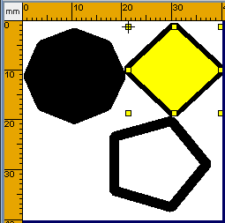
Premere sul tasto
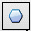
Poligono e poi posizionare il mouse sull'area di lavoro. Serviranno due clic uno per il punto iniziale e uno per il punto finale. Entrambi i clic sono fatti con il tasto sinistro del mouse. Non e' necessario tenere premuto il mouse fra i due clic. Anche se si tiene premuto il mouse il poligono viene disegnato, ma e' piu' semplice disegnarlo spostando il mouse e non trascinandolo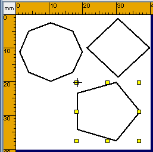
.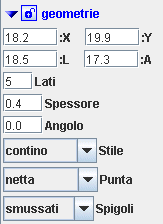
Dopo aver disegnato il poligono e' possibile modificarlo posizionandosi con il mouse su uno dei marker premendo e trascinando.Inoltre sara' possibile modificare il numero dei lati
Poligoni Tratteggiati o PuntoLineaDopo aver disegnato il rettangolo e' possibile renderlo tratteggiato cambiando lo stile. 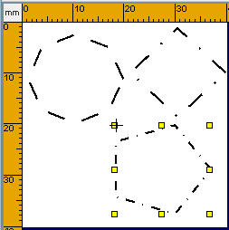 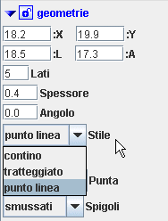 |
E' inoltre possibile modificare la scala del tratteggio per ottenere l'effetto desiderato
Poligoni con spigoli Arrotondati, Smussati, Squadrati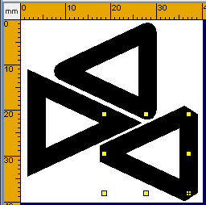 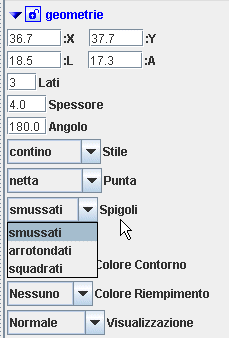 |
Poligoni PieniPer disegnare un poligono pieno e' sufficiente cambiare il "Colore Riempimento" da Nessuno a Nero. 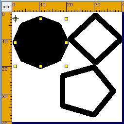 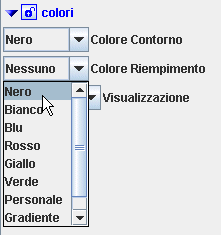 |
E possibile usare qualunque colore anche diverso dal "Colore Contorno".
 |
Il Gradiente nei poligoniConsente di ottenere degli effetti molto accattivanti per far risaltare delle notizie importanti o per dare un tocco grafico diverso. Per usare il gradiente bisogna selezionarlo fra la lista dei colori. 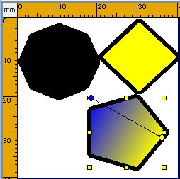 Per i dettagli di come si possa ottenere il gradiente di colore come sopra rimandiamo a il Gradiente nei Rettangoli |